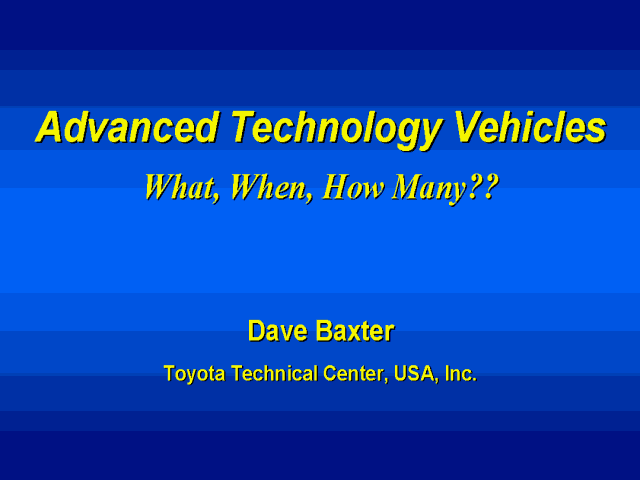

|
|
|

Good afternoon, ladies and gentlemen. My name is Dave Baxter. I am the Vice President for Regulatory Affairs at Toyota’s Technical Center in Ann Arbor, Michigan. I’m pleased to have this opportunity today to review with you Toyota’s vision of the future for Advanced Technology vehicles and the role hybrid vehicles play in that future. |
Slide 1 of 27